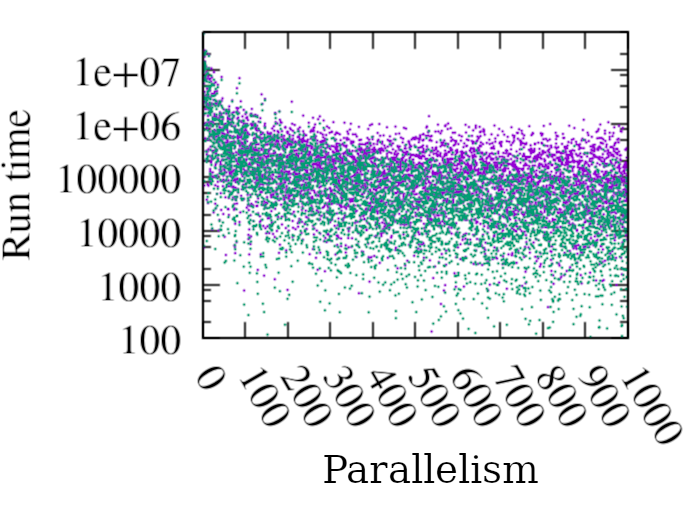
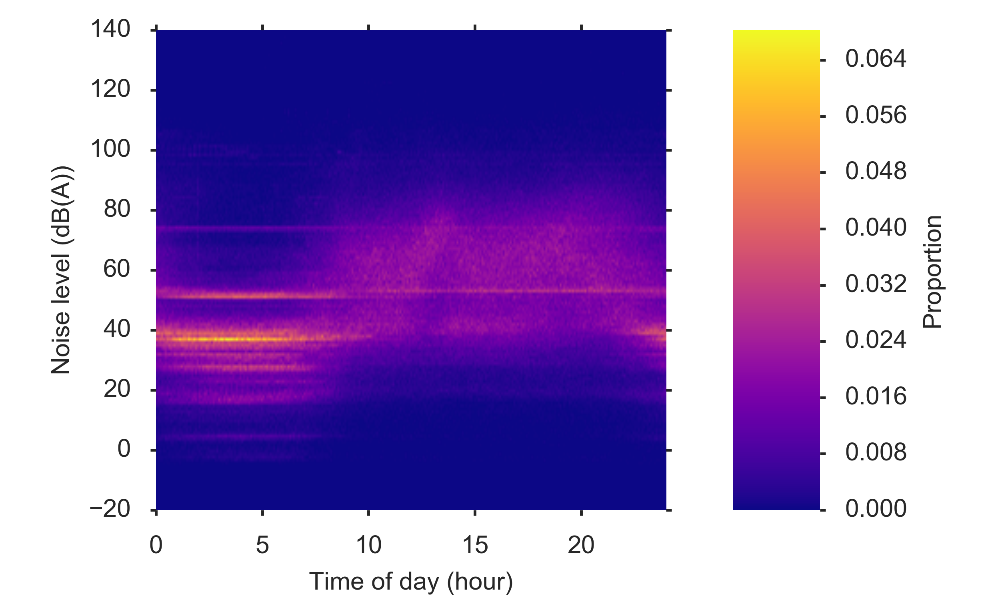

Docteur en modélisation de systèmes complexes. Avec mon expérience depuis 2010 au CNRS, à l'Inria et à l'Université Paris 6, je vous aide à:
J'ai travaillé avec Python, R, SQL pour analyser des données, Scala, Haskell, C pour le développement logiciel, Bash pour l'automatisation de tâches sous Unix, et plus récemment Rust, pour la découverte. Je suis toujours intéressé pour découvrir de nouveaux langages et technologies.
2017-2020, CNRS, Institut des Systèmes Complexes — Paris Île-de-France.
Les méthodes d'inférence bayésienne par simulation (Approximate Bayesian Computation) requièrent un très grand nombre d'exécution de modèles. Celles-ci étant indépendantes, on peut les exécuter en parallèle pour tirer profit des ressources de calcul distribuées. Cet algorithme permet d'exploiter efficacement des milliers de cpu en parallèle.
La figure ci-contre montre que le temps d'exécution de l'algorithme (vert) décroit plus vite que celui de son concurrent (violet) lorsque le nombre de cpu disponible (K) augmente. Chaque point correspond à une execution d'un algorithme avec un paramètrage fixé. Les paramètres sont échantillonnés uniformément pour tester les deux algorithmes dans un large éventail de conditions.

2016-2017, Inria, équipe Clime.
Le bruit a des conséquences problématiques sur le sommeil, le cœur, les performances scholaires…1. Les smart-phones sont équipés de microphones qui permettent de mesurer le niveau de bruit dans l'environnement de leurs utilisateurs. La figure ci-contre montre l'évolution des niveaux de bruits relevés par des téléphones mobiles.
En utilisant ces données, nous avons utilisé l'assimilation de données pour estimer l'exposition au bruit d'utilisateurs individuels, et comparé les expositions moyennes de deux populations. Sans surprise, Paris est plus bruyante que le reste de la France.

2013-2015, CNRS, Institut des Systèmes Complexes — Paris Île-de-France.
Pour tester la validité d'un modèle qui vise à expliquer un phénomène, nous avons proposé de rechercher ses comportements inattendus : ceux-ci peuvent constituer des contre-exemples, révéler des bugs ou des erreurs dans les hypothèses sous-jacentes. À cette fin, notre algorithme génétique PSE (pour pattern space exploration) explore les sorties possibles d'un modèle en simulation.
Nous l'avons appliqué à un modèle de croissance de villes2. La figure ci-contre montre que le modèle est capable de produire des systèmes de villes dont la hiérarchisation (le rapport entre la taille de ville la plus grande et celle des autres) et la croissance de la population dépassent largement les valeurs plausibles pour un géographe (zones grises).
2010-2013, Université Paris 6, Laboratoire Bioemco.
En savane, les bosquets réduisent localement l'intensité du feu en projetant de l'ombre au sol qui diminue le combustible — l'herbe — qui pousse. Ces regroupement d'arbres pourraient jouer un rôle sur la population globale en protégeant les jeunes pousses du feu. Ce modèle confirme que l'organisation spatiale joue un rôle sur la dynamique de population globale, mais dans l'autre sens : la population d'arbres est moindre comparée à un modèle qui non spatial.
Cette figure représente le modèle et des résultats de simulation. Le modèle de type automate cellulaire fait évoluer la présence d'arbres (cases noires) en fonction des recrutements (passages des jeunes au stade adulte) et des morts. Ces événements dépendent de la présence de voisins via l'ombre projetée dans le cas spatial, et de la densité d'arbres globale dans le cas non spatial. Lorsque l'espace n'est pas pris en compte, la population d'arbres atteint un niveau plus élevé que lorsqu'il l'est.